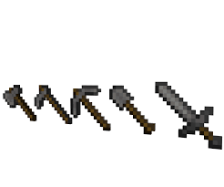
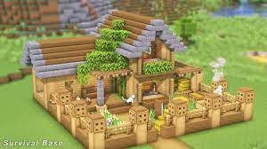
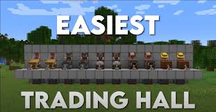
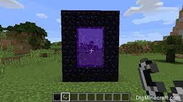
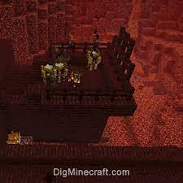
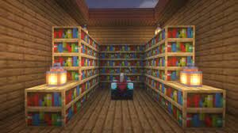

Early Game
-

- First you wold have to get basic resources, like wood and stone.
- After you have basic tools find a proper cave which where you would get iron to get better materials.
- Than once you have enough iron, make iron tools armor etc.
- One you have your basic gear start to travel and explore the world for a base location.
- After you have the right amount of materials build a small base which will serve as a base of operations.
- Now since everything is set up you are ready for the mid game. 

Mid game
- After you get tools armor and ahouse, look for a village. Once you found one trap the villagers into a enclosed area.
- After you have a "townhall" trade with your villagers to get resources like enchanting books for the end game.
- You coud trade for diamonds to get better armor and tools. 
- Once you obtained diamonds make a diamond pickaxe or diamond armor and mine obsidian which is made from mixing water and lava.
- One you have 14 obsdian make a nether portal wand light it up with a flint and steel 
- Travel to the nether and eventually you would end up at a nehter fortress. Find a blaze spawner and kill blazes for their powder. 
- Go back to the village and trade for enderpearls. Now you ready for the end game
- ---If you choose not to start a townhall go mining for diamonds---

End game
- Since you have the pearls and blaze powder combind them to make 12 eyes of ender. You would use this to find the stronghold which then could be activated to go to the end where the enderdragon lives.
- before going into the portal you would want to enchant your amror using the enchanment setup 
- Go to the portal room located in the stronghold and then be prepared for a battle


- ---After you killed the enderdragon the credits will roll and the game will be done. Theres still plenty of things to do though.---
| Armor tier | Armor Points | ||
|---|---|---|---|
| Leather | $250.00 | $660.50 | $410.50 |
| February | $135.55 | $895.20 | $1170.15 |